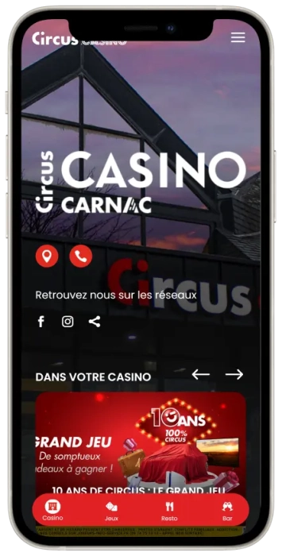
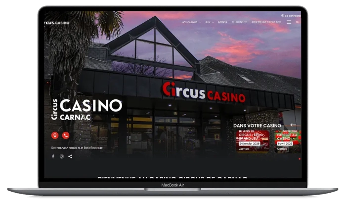

Offre de bienvenue exclusive de
Offre de bienvenue exclusive de
Profitez d’une expérience de jeux et de loisirs au Casino Circus Carnac à Carnac, France
Top casinos
Détails du bonus
Casino
Bonus
Note
Tours gratuits
Plus d'infos
Obtenir
Avantages
-
Plus de 90 machines dès 0,01 €
-
Terrasse fumeur avec 13 machines
-
Club gratuit avec avantages toute l’année
-
Bistro, bar, événements et parking sur place
-
Ambiance chic près du littoral de Carnac
Casino Circus Carnac App



Faits intéressants
- Plus de 90 machines à sous, dont 13 sur une terrasse accessible aux fumeurs, avec des mises à partir de 0,01 €
- 16 postes de roulette anglaise électronique, 2 tables de blackjack dès 5 € et 1 table d’Ultimate Texas Hold’em dès 2 €
- Salle de réception modulable de 220 m², capacité de groupe de 10 à 200 personnes, ouverture quotidienne à partir de 10 h
Au Casino Circus Carnac, nous nous positionnons comme une destination de loisirs terrestre à Carnac, où le jeu, la restauration et l’environnement balnéaire se rejoignent dans une seule et même adresse. Nous accueillons nos visiteurs toute l’année au 41 Avenue des Salines, dans une atmosphère chic, chaleureuse et détendue, à proximité de la mer et du secteur des Salines. Cette implantation renforce notre identité de lieu de sortie complet, et non de simple salle de jeu.

Caractéristiques du casino
Ce qui nous distingue à Carnac, c’est notre capacité à intégrer naturellement le jeu dans une soirée complète. Nos visiteurs peuvent commencer par une session sur machine à sous à très faible mise, poursuivre sur la roulette électronique ou le blackjack, puis prolonger l’expérience avec un dîner au bistrot, un passage au bar ou une animation musicale. Cette logique de parcours rend notre casino particulièrement pertinent pour les vacanciers, les visiteurs de passage et les habitués qui recherchent une offre plus large qu’un simple espace de jeu.
D’un point de vue pratique, notre offre trouve un bon équilibre entre accessibilité et diversité. La mise minimale de 0,01 € sur les machines à sous facilite la découverte et le divertissement à budget maîtrisé, tandis que les tables traditionnelles et les postes électroniques structurent une expérience plus complète. Le Circus Club gratuit, le parking, le parking privé et les espaces événementiels renforcent la valeur de notre casino pour les visites récurrentes, les longues soirées et les usages mixtes entre loisir, restauration et réception.
Notre établissement répond aussi à une attente essentielle des visiteurs d’aujourd’hui: pouvoir profiter d’un lieu unique où plusieurs envies peuvent coexister. Certains viennent pour jouer quelques instants dans une ambiance détendue, d’autres souhaitent s’installer plus longtemps et faire du casino un véritable temps fort de leur soirée. Cette souplesse d’usage permet à chacun d’adapter son expérience à son rythme, à son budget et à son envie du moment, sans contrainte inutile.
L’atmosphère du casino participe pleinement à cette expérience globale. En complément de l’offre de jeux, l’environnement sur place crée un cadre agréable pour se retrouver, échanger et prolonger la soirée dans une ambiance conviviale. Le bar, le bistrot et les animations contribuent à installer une dynamique plus vivante, qui dépasse la seule pratique du jeu et transforme la visite en moment de détente et de partage.
Cette dimension est particulièrement appréciable dans une destination comme Carnac, où les visiteurs recherchent souvent des activités capables de compléter naturellement une journée de découverte, de promenade ou de séjour en bord de mer. Le casino s’inscrit ainsi dans une logique de loisir local et touristique à la fois, en proposant une solution de sortie accessible, animée et facile à intégrer dans différents types de programmes, qu’il s’agisse d’une soirée improvisée ou d’un moment planifié.
Nos équipements et nos services renforcent également le confort d’usage sur place. La présence de solutions de stationnement, d’espaces adaptés aux événements et d’un programme de fidélité gratuit apporte une continuité appréciable pour les visiteurs réguliers comme pour ceux qui découvrent l’établissement. Cette organisation rend l’expérience plus fluide et plus pratique, tout en donnant au casino une fonction plus large que celle d’un simple lieu de passage.
Enfin, notre positionnement repose sur une combinaison claire: accessibilité, diversité des jeux, services complémentaires et ambiance. C’est cette cohérence qui fait du Casino Circus Carnac un lieu capable de répondre à des attentes variées, qu’il s’agisse de se divertir à faible mise, de profiter d’une sortie plus complète, d’organiser un moment convivial entre proches ou simplement de découvrir un établissement animé dans un cadre attractif. Pour beaucoup de visiteurs, cette polyvalence constitue une vraie valeur ajoutée et renforce l’intérêt du casino dans l’offre de loisirs locale.
Fournisseurs de logiciels
Dépôts et retraits
Pour un casino terrestre, la logique des transactions ne repose pas uniquement sur les moyens de paiement affichés, mais aussi sur la lisibilité du budget nécessaire avant la visite. À Carnac, les chiffres publiés les plus utiles pour la gestion du bankroll sont les mises minimales de jeu : 0,01 € sur les machines à sous, 1 € sur la roulette anglaise électronique, 2 € sur l’Ultimate Texas Hold’em et 5 € sur le blackjack. Cette structure permet à nos visiteurs de choisir facilement entre une expérience découverte, une session détendue ou une soirée davantage orientée vers les tables.
En parallèle, nous gardons ce bloc strictement factuel. Les informations publiques disponibles sur le Casino Circus Carnac détaillent clairement l’offre de jeu, l’accès, la restauration, le programme de fidélité et les services sur place, mais les données précises concernant les méthodes de dépôt, les retraits, les frais et les délais de traitement ne sont pas specified. Pour rester exacts, nous le reflétons tel quel dans le tableau ci-dessous.
Cette approche est importante, car dans un établissement terrestre, la préparation d’une visite repose souvent sur une lecture simple des conditions d’accès au jeu plutôt que sur une logique transactionnelle comparable à celle d’une plateforme en ligne. Les visiteurs cherchent avant tout à savoir quel budget minimum prévoir pour participer, tester plusieurs jeux ou construire une soirée cohérente avec leurs préférences. À Carnac, les mises minimales publiées offrent justement ce repère concret, immédiatement compréhensible et utile avant même l’arrivée sur place.
La présence de seuils d’entrée différenciés selon les jeux contribue également à une meilleure flexibilité d’usage. Une mise minimale très basse sur les machines à sous permet une découverte accessible et progressive, tandis que les tables et jeux électroniques avec des niveaux d’entrée plus élevés structurent une expérience plus orientée vers des sessions de jeu spécifiques. Cette répartition aide les visiteurs à adapter naturellement leur parcours en fonction de leur budget, de leur familiarité avec les jeux et du temps qu’ils souhaitent consacrer à leur visite.
Pour de nombreux clients, cette lisibilité représente un élément de confort. Elle permet de mieux anticiper la dépense de loisir, d’éviter les approximations et de choisir plus sereinement entre plusieurs formats de soirée. Certains privilégieront une approche légère, centrée sur quelques parties à faible mise, tandis que d’autres s’orienteront vers une expérience plus complète incluant jeux de table, restauration et temps de détente sur place. Dans les deux cas, les indications de mise minimale jouent un rôle utile dans la préparation du budget.
Il est également pertinent de distinguer clairement ce qui relève d’une information publique confirmée et ce qui ne l’est pas. Dans le cas du Casino Circus Carnac, les éléments publiés permettent de décrire avec précision l’environnement général de l’établissement, son offre de jeu et plusieurs services complémentaires, mais ils ne détaillent pas certains paramètres transactionnels comme les méthodes exactes de paiement acceptées, les éventuels frais associés, les plafonds, les modalités de retrait ou les délais de traitement. Maintenir cette distinction permet de préserver une présentation rigoureuse et fiable.
Cette rigueur rédactionnelle est d’autant plus importante que les visiteurs peuvent interpréter différemment la notion de “transactions” dans le contexte d’un casino physique. Sur place, l’expérience repose davantage sur les conditions d’accès au jeu, la praticité des services et la clarté des informations disponibles que sur une mécanique détaillée de dépôts et retraits présentée à l’avance. En l’absence de données publiques plus précises, il est donc plus juste de mettre en avant les seuils de mise et les informations confirmées, plutôt que de suggérer des modalités non documentées.
Au final, le Casino Circus Carnac présente une structure lisible pour les visiteurs qui souhaitent encadrer leur budget avant une sortie. Les mises minimales publiées constituent les repères les plus concrets pour organiser une session de découverte, un moment de divertissement maîtrisé ou une soirée plus complète. En revanche, les informations détaillées sur les méthodes de paiement, les retraits, les frais et les délais n’étant pas précisées dans les données publiques consultables, elles doivent être présentées avec prudence et sans extrapolation. Cette combinaison entre transparence sur les chiffres disponibles et retenue sur les éléments non spécifiés permet de proposer un contenu à la fois utile, clair et exact.
FAQ
Nous sommes situés au 41 Avenue des Salines, 56340 Carnac, France.
Nous proposons des machines à sous, l’Ultimate Texas Hold’em, le blackjack et la roulette anglaise électronique.
Les minimums publiés sont de 0,01 € sur les machines à sous, 1 € sur la roulette anglaise électronique, 2 € sur l’Ultimate Texas Hold’em et 5 € sur le blackjack.
Oui. Nous disposons du Circus Bistro et d’un bar ouvert tous les jours dès 10 h, avec cocktails et restauration légère.
Oui. Nous proposons un parking, un parking privé et une salle de réception modulable de 220 m² pour les événements privés et professionnels.
Oui. Notre Circus Club gratuit permet de cumuler des points et d’obtenir des cadeaux et avantages, avec des surprises d’anniversaire.
not specified